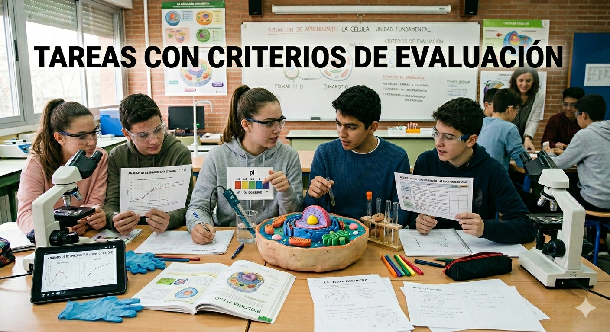

Tabla de vinculaciones

En el diseño de esta situación de aprendizaje para 4º ESO en la materia de Biología y Geología, la vinculación explícita de los criterios de evaluación con las tareas propuestas es el mecanismo que garantiza la coherencia pedagógica y la transparencia del proceso. No se trata simplemente de calificar un producto final, sino de utilizar los criterios como la "hoja de ruta" que define qué competencias específicas esperamos que el alumnado desarrolle en cada actividad. Al asociar cada tarea a uno o varios criterios, transformamos la evaluación en un proceso formativo y objetivo, permitiendo que los estudiantes comprendan exactamente qué se espera de ellos y qué dimensiones de su aprendizaje se están valorando. Esta alineación no solo facilita la labor docente al simplificar la toma de datos mediante rúbricas o escalas de logro, sino que también fomenta la autorregulación del alumnado, quien deja de trabajar para "aprobar" y comienza a trabajar para alcanzar los estándares de desempeño competencial establecidos en el currículo.